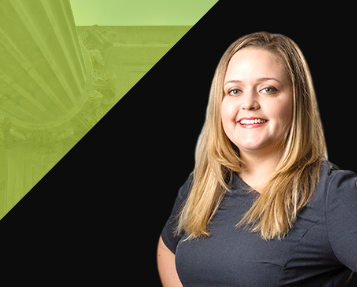

KTMC is Pleased to Announce that Emily N. Christiansen
Has Been Named a Fellow of the American Bar Foundation
July 1, 2020

Kessler Topaz is pleased to announce that Emily N. Christiansen has been named a Fellow of the American Bar Foundation (ABF). The Fellows comprise a global honorary society of attorneys, judges, law faculty, and legal scholars whose public and private careers have demonstrated outstanding dedication to the highest principles of the legal profession and to the welfare of their communities.
Emily is a partner with Kessler Topaz and concentrates her practice on securities litigation and non-US actions in particular. Emily devotes her time to advising clients on the challenges and benefits of pursuing particular litigation opportunities in jurisdictions outside the U.S. In those non-US actions where Kessler Topaz is actively involved, Emily liaises with local counsel, helps develop case strategy, reviews pleadings, and helps clients understand and successfully navigate the legal process. Her experience includes non-US opt-in actions, international law, and portfolio monitoring and claims administration. Emily has served in many leadership positions within the American Bar Association’s Section of International Law and is currently serving as a Deputy Communications Officer (2019 – present). She previously served as the Deputy Rule of Law Officer (2017-2019) and is the immediate past co-Chair of the Section’s Young Lawyers’ Interest Network (2016-2019).
The American Bar Foundation is among the world's leading research institutes for the empirical and interdisciplinary study of law. An independent, nonprofit organization for nearly 70 years, the ABF seeks to advance the understanding and improvement of law through research projects of unmatched scale and quality on the most pressing issues facing the legal system in the United States and the world.